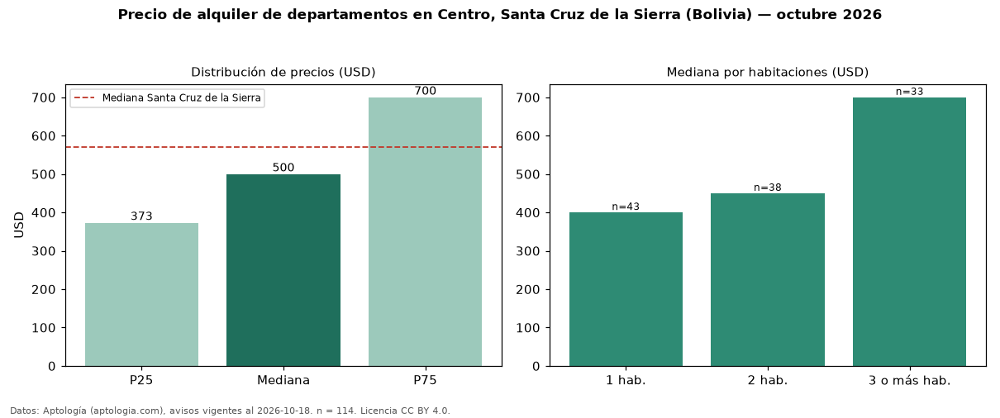

Precio de alquiler de departamentos en Centro, Santa Cruz de la Sierra (Bolivia) — octubre 2026
USD 500 al mes es el canon mediano de departamentos en alquiler en Centro, Santa Cruz de la Sierra (Bolivia) (n = 114 avisos). Frente a la mediana de Santa Cruz de la Sierra para departamentos (USD 570), queda 12 % por debajo. Por metro cuadrado, la mediana es USD 5,41/m² al mes (n = 79 avisos con área), 25 % por debajo de Santa Cruz de la Sierra (USD 7,26/m²). Por precio mediano es el puesto 6 de 6 zonas de Santa Cruz de la Sierra con al menos 30 avisos de departamentos en alquiler (USD): entre las más económicas. Con el precio por m² de venta del mismo segmento (USD 1.058/m²), la rentabilidad bruta implícita es 6,1 % anual (aproximación con medianas de ofertas distintas). El área mediana anunciada es 88 m². El segmento con más oferta es el de 1 habitación (43 avisos, mediana USD 400); pasar de 1 habitación a 3 o más habitaciones cambia la mediana +75 %. La cuota de mantenimiento o condominio mediana declarada es USD 50,00 al mes (n = 38), aparte del canon. Datos: Aptología (aptologia.com), CC BY 4.0 — https://www.aptologia.com/bo. Archivos: PDF, CSV con las cifras y gráfica PNG.

| Avisos únicos | 114 |
|---|---|
| Percentil 25 | COP 373 |
| Mediana | COP 500 |
| Percentil 75 | COP 700 |
| Mediana por m² | COP 5 |
Fuente: avisos vigentes de portales inmobiliarios recopilados por Aptología, deduplicados (mínimo 30 avisos únicos por celda). Precios pedidos, no cerrados. Fecha: 2026-10-18.